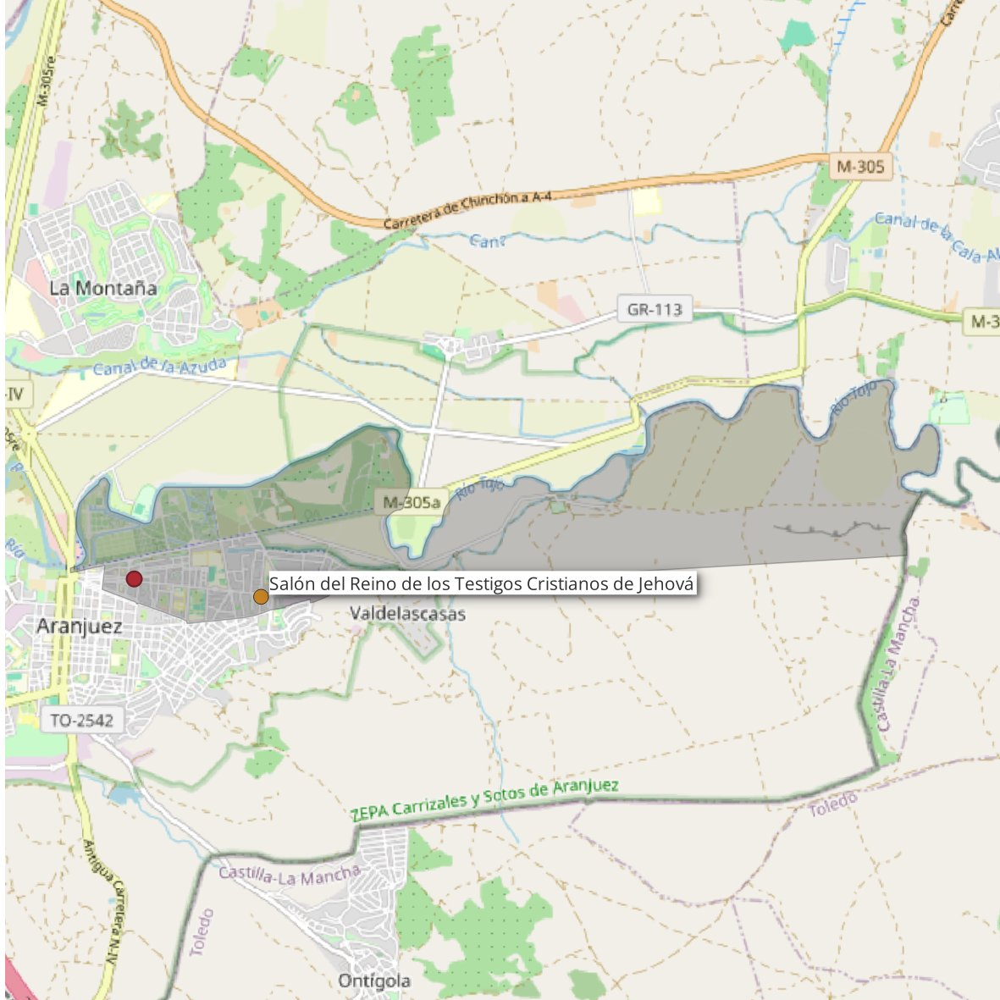
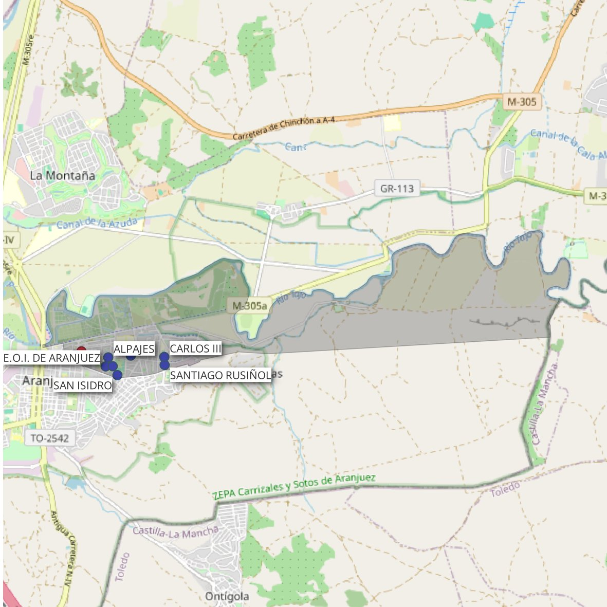

Puntos de interés en el territorio parroquial
Parroquia Nuestra Señora de las Angustias (Aranjuez) · Arciprestazgo de Aranjuez
Entidades religiosas no católicas

1 entidad religiosa no católica en el territorio de la parroquia.
Testigos de Jehová (1)
- Salón del Reino de los Testigos Cristianos de JehováCalle de Augusto Moreno 1, Aranjuez
Fuente: Registro de Entidades Religiosas del Ministerio de la Presidencia, Justicia y Relaciones con las Cortes. Situación en el mapa: dirección geocodificada con CartoCiudad (IGN) o Nominatim (OpenStreetMap).
Centros educativos

8 centros educativos en el territorio de la parroquia (público: 7, privado concertado: 1).
| Centro | Tipo | Titularidad | Domicilio | Web |
|---|---|---|---|---|
| ALPAJES | Instituto de educación secundaria | Público | Calle de las Moreras, 28, 28300 Aranjuez | Página web |
| APOSTOL SANTIAGO | Centro privado de educación infantil, primaria y secundaria | Privado concertado | Calle de las Moreras, 217, 28300 Aranjuez | Página web |
| CARLOS III | Colegio de educación infantil y primaria | Público | Calle de las Moreras, 221, 28300 Aranjuez | Página web |
| E.O.I. DE ARANJUEZ | Escuela oficial de idiomas | Público | Calle Lucas Jordán, 4, 28300 Aranjuez | Página web |
| JARDINES DE ARANJUEZ | Escuela infantil | Público | Calle del Primero de Mayo, 3, 28300 Aranjuez | Página web |
| SAN ISIDRO | Colegio de educación infantil y primaria | Público | Calle de los Cuarteles, 51, 28300 Aranjuez | Página web |
| SANTIAGO RUSIÑOL | Instituto de educación secundaria | Público | Calle Alhambra de Granada, 28300 Aranjuez | Página web |
| VICENTE ALEIXANDRE | Colegio de educación infantil y primaria | Público | Calle del Príncipe, 38, 28300 Aranjuez | Página web |
Fuente: registro de centros educativos de la Comunidad de Madrid. Solo se recogen los centros en situación de alta.